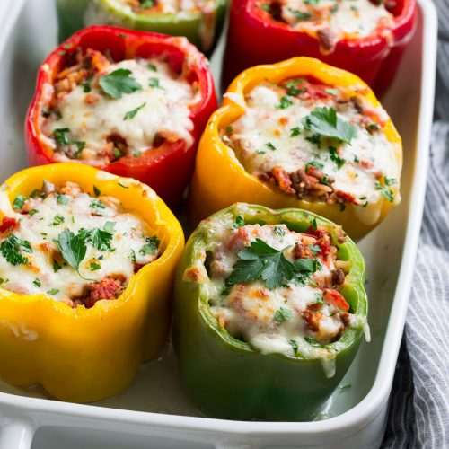

Stuffed Peppers

Description
These Stuffed Peppers will have you shocked with how quick they are to prep, and how delicious the result is!
Ingredients
- 1 cup cold water
- 1/2 cup uncooked long grain white rice
- 1 tablespoon vegetable oil
- 1 pound ground beef
- 6 medium green bell peppers
- 16 ounces tomato sauce, divided
- 1 tablespoon Worcestershire sauce
- 1/4 teaspoon garlic powder
- 1/4 teaspoon onion powder
- salt and grond black pepper to taste
- 1 teaspoon Italian seasoning
Directions
- Cook rice in a covered saucepan until tender. At the same time, cook ground beef in a skillet until browned and crumbly
- Hollow the peppers by cutting off the tops and scooping out seeds and membranes. Arrange peppers in a single layer in a baking dish
- Prepare a filling of rice, ground beef, tomato sauce, Worcestershire sauce, garlic powder, onion powder, salt and pepper
- Stuff the peppers with the filling, and top each one with a mixture of tomato sauce and Italian seasoning
- Bake the peppers until tender, basting with sauce every 15 minutes